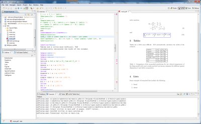
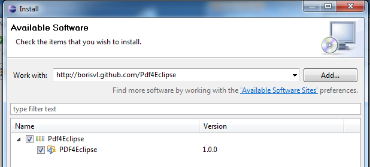

Pdf4Eclipse enriches Eclipse with a pdf reader. One of its notable feature is a complete integration of SyncTeX, which allows forward and inverse search in pdf files. This makes it a perfect viewer for documents created with TeXlipse.
Screenshot
The following screenshot shows a side-by-side view of a LaTeX document and its corresponding pdf document. The blue box in the pdf document is the result of a forward search. 
{kind=link}
Features
- Support of a wide range of pdf documents
- Bookmarks can be shown in the outline view
- Uses the look-and-feel of Eclipse
- Supports links in pdfs
- SyncTeX integration
- Automatically reload when pdf changes
- Written solely in Java
- Open-Source
Note: It was not the intention for the development of Pdf4Eclipse to replace your default
Pdf viewer but to have a viewer in Eclipse to preview your LaTeX documents and
show some documentation.
Hence, some common features are missing like searching inside
documents or printing of pdfs. Maybe some of them will be added in a later version.
http://borisvl.github.com/Pdf4Eclipse
